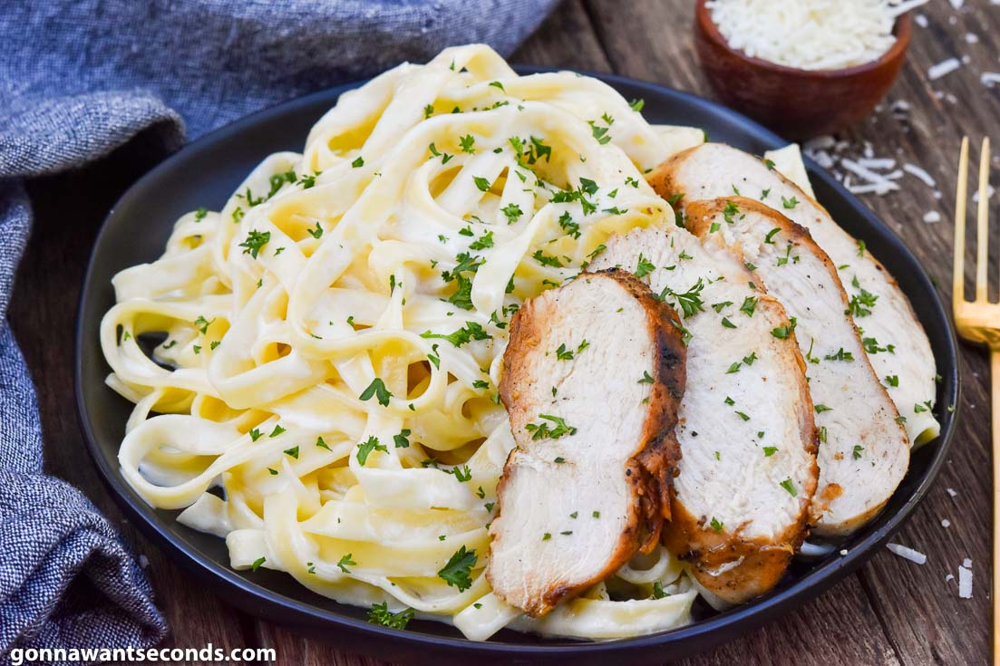
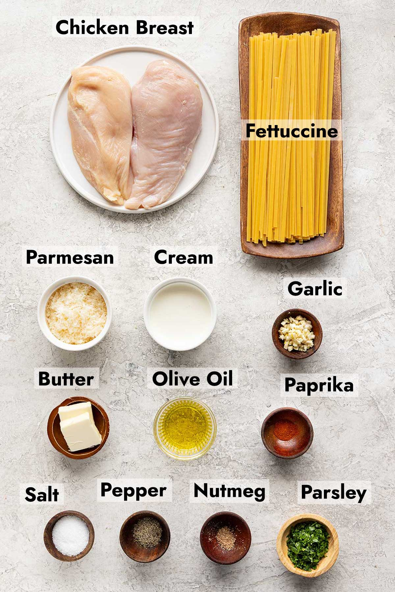
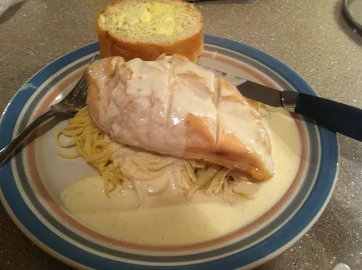

Alfredo
Alfredo can be made with or without a protein included. The most common
proteins are chicken, shrimp, and italian sausage.
Chicken Alfredo
For this recipe, we are going to focus on my favorite version of Alfredo,
chicken alfredo

Ingredients

To make chicken alfredo, we are going to need the following ingredients:
- 2 pounds skinless, boneless chicken breasts, cut into chunks
- pinch of salt and ground black pepper
- 2 (16 ounce) packages spaghetti
- 4 (15 ounce) jars Alfredo sauce
- 2 teaspoons Italian seasoning, or to taste
- 2 teaspoons garlic powder, or to taste
- 2 tablespoons chopped onion
- 2 tablespoons chopped fresh basil, or to taste
- 1 teaspoon salt, or to taste
- 2 teaspoons ground black pepper, or to taste
- 1 teaspoon onion powder, or to taste
- ½ teaspoon cayenne pepper, or to taste
- 1 ½ cups shredded Parmesan cheese (Optional)
- 2 cups chopped broccoli (Optional)
Directions
Here are the steps we will want to follow to bring the dish together:
- Gather all ingredients
-
Season chicken with a pinch of salt and pepper. Heat a large skillet
over medium-high heat. Add chicken and cook until no longer pink in the
center and juices run clear, 7 to 10 minutes.
-
Bring a large pot of lightly salted water to a boil. Cook spaghetti in
the boiling water, stirring occasionally, until tender yet firm to the
bite, 8 to 10 minutes.
-
Meanwhile, add Alfredo sauce to the chicken; season to taste with
Italian seasoning, garlic powder, onion, basil, salt, black pepper,
onion powder, and cayenne.
-
Bring to a simmer; stir in Parmesan cheese. Cook mixture until cheese is
melted and you are able to lift a spoon out of the sauce without cheese
hanging onto it, 3 to 5 minutes.
-
Place a steamer insert into a saucepan and fill with water to just below
the bottom of the steamer. Bring water to a boil. Add broccoli, cover,
and steam until tender, 2 to 6 minutes.
- Add broccoli to sauce.
-
Drain cooked pasta. Scoop into individual serving bowls and pour sauce
on top.
Enjoy bruh...

Yeah, gon head an stick dat in ya gullet bruh... yeah...
Home